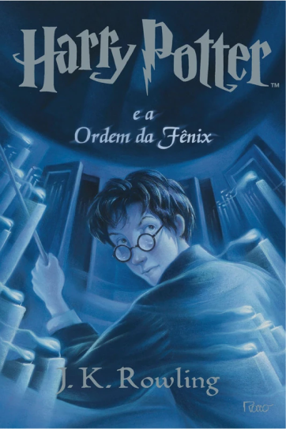
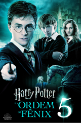

Livro 2
Harry Potter e a Ordem da Fenix
Resumo
Durante mais um verão passando as férias na casa dos tios, Harry Potter e seu primo Dudley são atacados por dois dementadores perto de casa à noite. Para salvar a si e ao primo, Harry usa um feitiço do patrono e ao chegar em casa carregando o primo, Harry recebe uma carta do Ministério da Magia comunicando sua expulsão da Escola de Magia e Bruxaria de Hogwarts por usar a magia fora da escola, mas logo em seguida essa decisão é rescindida em outra carta, que comunica que Harry deverá comparecer a uma audiência no Ministério dali a algumas semanas. Alguns dias depois desse evento, Harry é resgatado da casa dos tios por um grupo peculiar de bruxos liderado pelo ex-auror Olho-Tonto Moody e o ex-professor de Defesa Contra as Artes das Trevas de Harry, Remo Lupin.
Esse grupo o leva para o Largo Grimmauld, 12, uma casa bruxa sombria e mofada que pertence ao padrinho de Harry, Sirius Black e que também serve como a sede da Ordem da Fênix, uma organização secreta de bruxos adultos liderados por Alvo Dumbledore que lutam contra Voldemort e os Comensais da Morte. Durante sua estada no Largo Grimmauld, Harry, Rony e Hermione são informados parcialmente sobre os planos e ações do Lorde das Trevas, que ele está buscando avidamente uma arma que poderia alçá-lo ao poder. Harry descobre então sobre a campanha difamatória que o Ministério e o Profeta Diário estão fazendo contra ele e Dumbledore.
Poster do Filme
Trailer
Curiosidades
- É o livro mais longo da série, com mais de 257.000 palavras. Rowling disse que o livro ficou tão grande porque ela queria incluir muitos detalhes sobre o Ministério da Magia e a luta contra Voldemort.
- A personagem Dolores Umbridge, que é uma das principais vilãs deste livro, foi inspirada em uma professora que J.K. Rowling teve na escola, que ela descreveu como sendo "o terror dos alunos". Rowling disse que queria criar um personagem que representasse a autoridade opressiva.
- O livro apresenta a Sala da Profecia, que é um importante objeto da trama. Rowling disse que a ideia da sala foi inspirada em uma lenda grega sobre uma jarra que continha todos os males do mundo. A ideia era que a Sala da Profecia contivesse informações cruciais para a luta contra Voldemort.
- O livro contém uma cena muito emocionante em que Harry se comunica com seu padrinho, Sirius Black, através da rede de lareiras. Rowling disse que essa cena foi inspirada em uma experiência pessoal que teve quando seu avô morreu. Ela disse que sentiu a presença dele em sua casa e ficou emocionada com a sensação de conexão que teve.